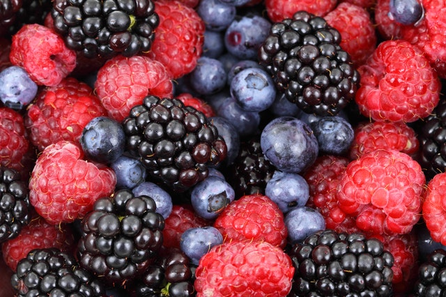

Reducing Risk of Chronic Disease
Recommendations on Diet, Chronic Diseases, and Health
Chronic diseases are largely preventable through a healthy lifestyle involving a balanced diet and regular physical activity. Good nutrition is essential for keeping everyone healthy across the lifespan. A healthy diet helps children grow and develop properly and reduces their risk of chronic diseases, including obesity. Healthy eating can help people with chronic diseases manage these conditions and prevent complications.
So here are some recommendations of diet plans against chronic diseases:
- Intermittent fasting - is a dietary strategy that cycles between periods of fasting and eating.
- Plant-based diets - may help you lose weight. Vegetarianism and veganism are the most popular versions, which restrict animal products for health, ethical, and environmental reasons.
- Low-carb diets - are among the most popular diets for weight loss. Examples include the Atkins diet, ketogenic (keto) diet, and low-carb, high-fat (LCHF) diet.
- The paleo diet - - It is based on the theory that modern diseases are linked to the Western diet, as proponents believethat the human body hasn’t evolved to process legumes, grains, and dairy.
- Low-fat diets - restrict your intake of fat, as this macronutrient is higher in calories than protein and carbs. Studies have linked low-fat diets to weight loss and lower risks of heart disease and diabetes.


